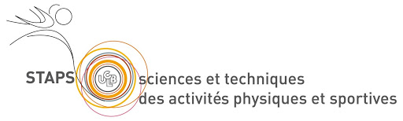
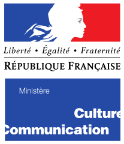
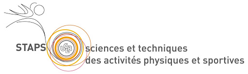
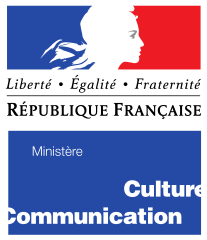

Bonjour et bienvenue sur la plateforme de Réservation de la section Danse-Étude !
Choisissez une des quatre dates disponibles pour les réprésentations à la Rotonde de INSIDE et ÉCLATS DE DANSE :
Réservation pour le lundi 20 Septembre 2021
Réservation Lundi
Réservation pour le mercredi 22 Septembre 2021
Réservation Mercredi
Réservation pour le jeudi 23 Septembre 2021
Réservation Jeudi
Réservation pour le vendredi 24 Septembre 2021
Réservation Vendredi
INFORMATION:
HORAIRE : Lundi 20/09, Mercredi 22/09, Jeudi 23/09, Vendredi 24/09 à 20h00.
ADRESSE : Rotonde, campus de la doua, INSA LYON , 14 - 16 Av. des Arts, 69100 Villeurbanne.
TARIF : Libre.
INFO COMPLÉMENTAIRE : La jauge est limitée à 350 personnes par soir.
DESCRIPTIONS:
« Eclats de danse » sous la direction de Rolan Bon - Cie. XY et Claire Lurin - Cie. 3949
Durée 35 min
Pour célébrer les 30 ans de la section, différentes générations de danse-études ont pu se rencontrer autour du travail de Rolan Bon. Anciens et nouveaux se partagent la scène pour reprendre en répertoire différents extraits de pièces que le chorégraphe a dirigé lors de ses interventions au sein de la section.
« Inside » sous la direction de Thomas Guerry - Cie. Arcosm
Durée 40 min
Aborder une situation planétaire dans laquelle l’humanité s’est vue plongée. Permettre aux corps de s’exprimer à travers une danse engagée et engageante. Innover, prendre part au débat, porter un regard burlesque sur nos sociétés et nos politiques. C’est le pari qu’a fait Thomas Guerry accompagné d’une équipe hors norme et profondément humaine en venant créer « Inside » pour les étudiants de la section.
Attention !! N'oubliez pas de prendre votre pass sanitaire, des contrôles seront effectués à l'entrée de la rotonde.
CONTACT : tom.poupard@insa-lyon.fr, contacter si désistement.
 


